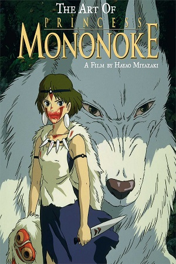
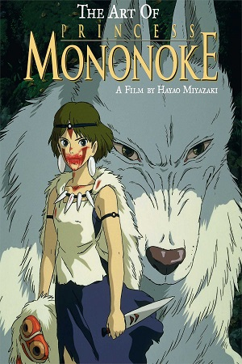

Túmulo dos Vaga-Lumes
Dois irmãos japoneses tentam sobreviver, numa cabana abandonada, às amarguras da Segunda Guerra Mundial.
Fome, solidão e desesperança marcam a espera pelo retorno incerto do pai que está no front da batalha.
Dois irmãos japoneses tentam sobreviver, numa cabana abandonada, às amarguras da Segunda Guerra Mundial.
Fome, solidão e desesperança marcam a espera pelo retorno incerto do pai que está no front da batalha.
 
